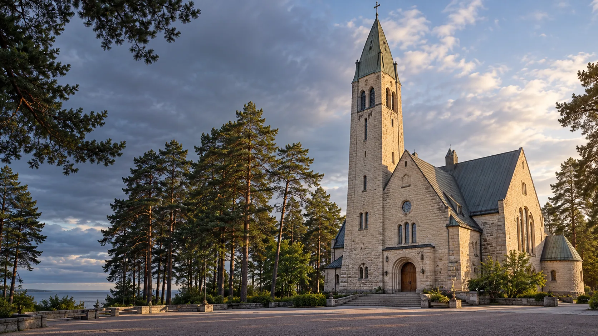

Площадка ПМЦ
Восход: Володарского
г. Сестрорецк, ул. Володарского, д. 21
Смотреть площадку
Молодёжные площадки района
Площадки «Восхода», «Молодости» и «Снайпера» в Сестрорецке, Песочном и Зеленогорске.
Смотреть площадкиКаталог района
Ищи по названию, адресу или направлению.
Показано 9 площадок
Загружаем карту клубов…
Предварительные координаты: © OpenStreetMap contributors.
г. Сестрорецк, ул. Володарского, д. 21
Смотреть площадкуг. Сестрорецк, Приморское ш., д. 270
Смотреть площадкуг. Сестрорецк, ул. Мосина, д. 1
Смотреть площадкуг. Сестрорецк, ул. Токарева, д. 15
Смотреть площадкуг. Сестрорецк, Приморское ш., д. 280
Смотреть площадкупос. Песочный, ул. Карла Маркса, д. 57А, лит. А
Смотреть площадкуг. Зеленогорск, ул. Исполкомская, д. 5, лит. А
Смотреть площадкуг. Зеленогорск, пр. Ленина, д. 25
Смотреть площадкуг. Зеленогорск, Привокзальная ул., д. 7
Смотреть площадкуПодходящих площадок не найдено. Попробуй другой запрос.
Связаться с учреждением
Контакты учреждения
г. Сестрорецк, Приморское ш., д. 286
Контакты учреждения
пос. Песочный, ул. Карла Маркса, д. 57А
Контакты учреждения
г. Зеленогорск, ул. Исполкомская, д. 5
Перед посещением
Спроси, для кого открыта группа.
Проверь дни, время и наличие мест.
Узнай, как присоединиться.
Направления и бесплатные группы сверены по официальным сайтам и городским документам. Расписания: «Восход», графики на 2026 год, «Молодость», архив с 1 июня по 31 августа 2026 года, «Снайпер», с 12 октября 2026 года. Два зала «Восхода» на Приморском шоссе, 280 объединены в одну карточку. На Привокзальной, 7 бесплатные группы пока не подтверждены. Набор и изменения времени уточняй перед визитом.